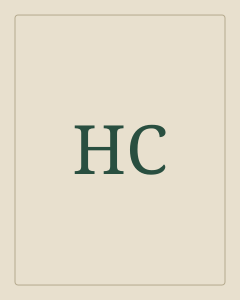

H. C. Andersen
Pienellä ja sivuun jäävällä on oma ääni.
Andersen oli tanskalainen kirjailija, joka kirjoitti satujen lisäksi romaaneja, runoja ja matkakuvauksia.
Etsi teokset kirjastostaElämä ja teokset
Andersen oli tanskalainen kirjailija, joka kirjoitti satujen lisäksi romaaneja, runoja ja matkakuvauksia. Hänen tunnetuissa saduissaan esineet ja eläimet saavat oman kokemuksen. Kertomukset puhuttelevat sekä lapsia että aikuisia.
Tyyli ja teemat
Lempeys ja terävä yhteiskunnallinen havainto kulkevat rinnakkain. Loppu voi jättää surun näkyviin, vaikka kertomuksessa olisi myös toivoa.
Ulkopuolisuus · Myötätunto · Satiiri
Aloita tästä
Keisarin uudet vaatteet
Turhamaisuus ja pelko vaientavat hovin, kunnes lapsi sanoo ääneen sen, minkä kaikki näkevät.
Pieni tulitikkutyttö
Kylmässä seisovan tytön näyt avaavat hetkeksi lämpimän maailman ja tekevät välinpitämättömyyden näkyväksi.
Prinsessa ja herne
Herne patjojen alla toimii erikoisena kokeena. Sadun liioittelu kutsuu myös nauramaan luokkajaolle.
Vakaa tinasotamies
Yksijalkainen leluhahmo joutuu pitkälle matkalle. Pieni satu yhdistää rakkauden, sattuman ja surun.
Kenen näkökulmasta tavallinen esine tai tapahtuma nähdään?